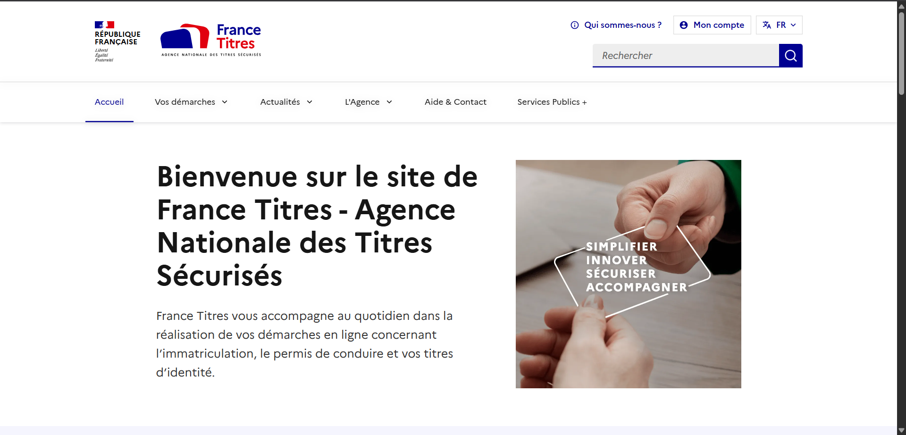

Vote Citoyen
Participez au débat démocratique en exprimant votre choix sur des sujets d'intérêt public. Un parcours simple, transparent et accessible à tous.
Commencer
Participez au débat démocratique en exprimant votre choix sur des sujets d'intérêt public. Un parcours simple, transparent et accessible à tous.
Commencer